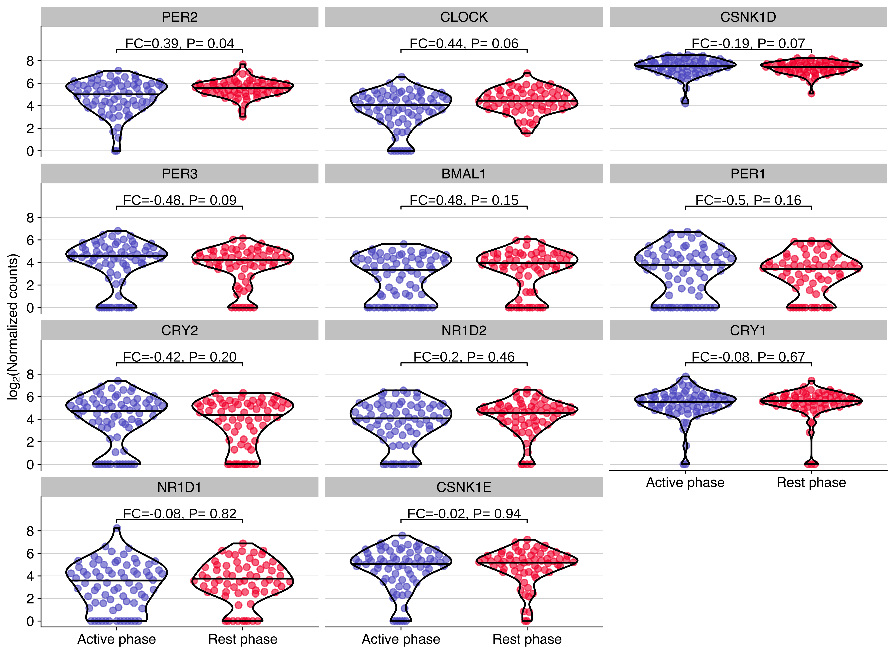
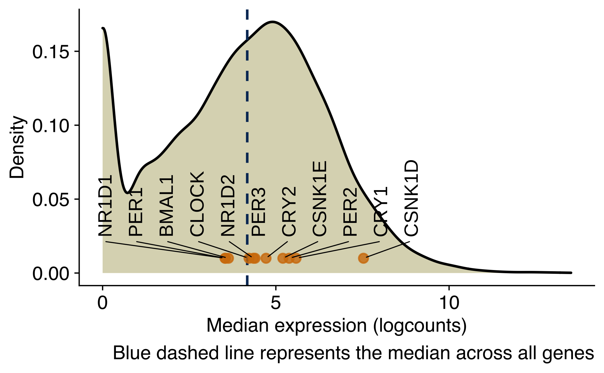
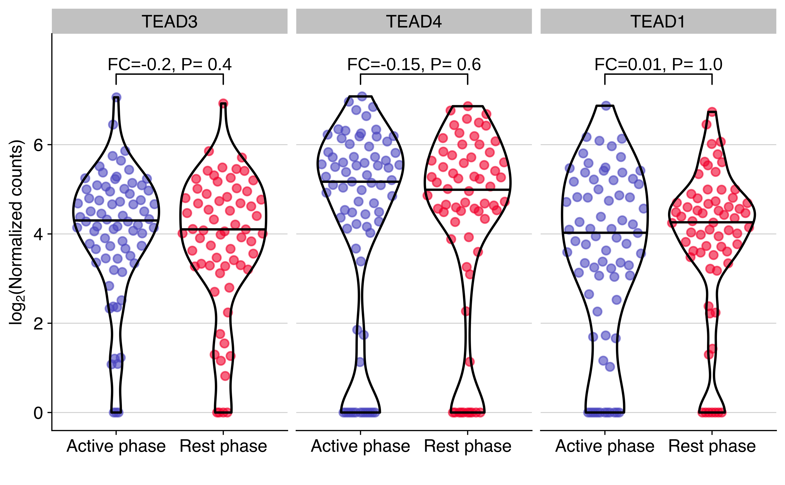
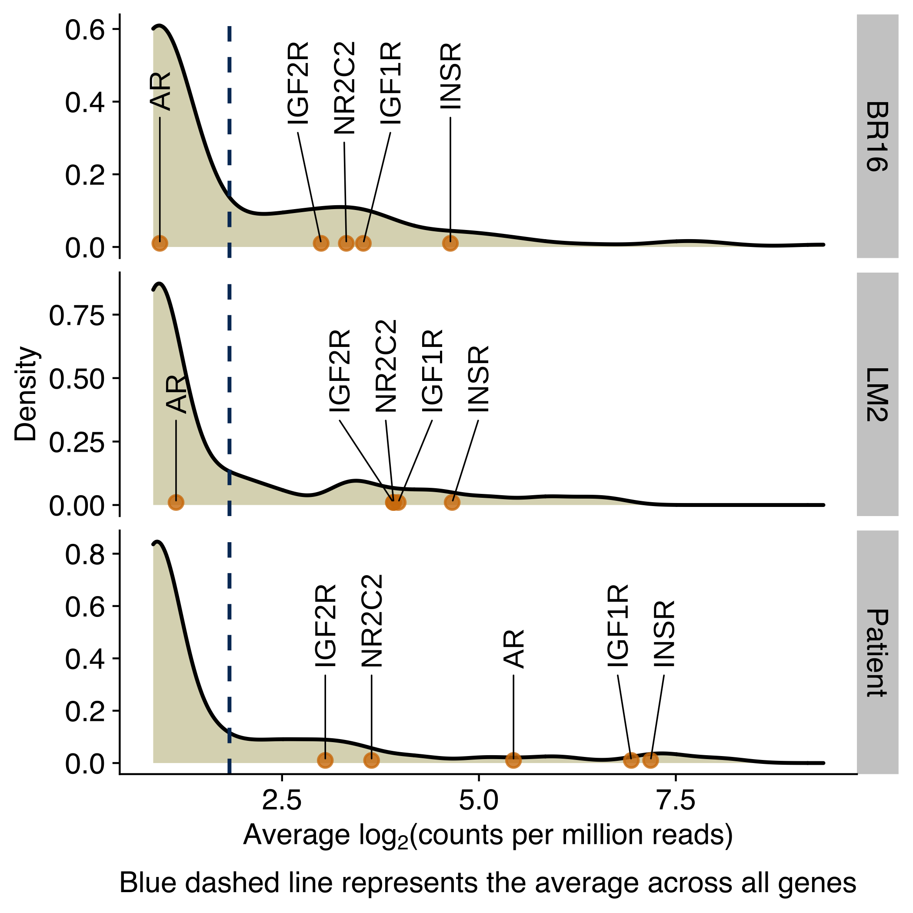

Last updated: 2022-04-26
Checks: 7 0
Knit directory:
diamantopoulou-ctc-dynamics/
This reproducible R Markdown analysis was created with workflowr (version 1.6.2). The Checks tab describes the reproducibility checks that were applied when the results were created. The Past versions tab lists the development history.
Great! Since the R Markdown file has been committed to the Git repository, you know the exact version of the code that produced these results.
Great job! The global environment was empty. Objects defined in the global environment can affect the analysis in your R Markdown file in unknown ways. For reproduciblity it’s best to always run the code in an empty environment.
The command set.seed(20220425) was run prior to running
the code in the R Markdown file. Setting a seed ensures that any results
that rely on randomness, e.g. subsampling or permutations, are
reproducible.
Great job! Recording the operating system, R version, and package versions is critical for reproducibility.
Nice! There were no cached chunks for this analysis, so you can be confident that you successfully produced the results during this run.
Great job! Using relative paths to the files within your workflowr project makes it easier to run your code on other machines.
Great! You are using Git for version control. Tracking code development and connecting the code version to the results is critical for reproducibility.
The results in this page were generated with repository version 0ded9f5. See the Past versions tab to see a history of the changes made to the R Markdown and HTML files.
Note that you need to be careful to ensure that all relevant files for
the analysis have been committed to Git prior to generating the results
(you can use wflow_publish or
wflow_git_commit). workflowr only checks the R Markdown
file, but you know if there are other scripts or data files that it
depends on. Below is the status of the Git repository when the results
were generated:
Ignored files:
Ignored: .Rhistory
Ignored: .Rproj.user/
Untracked files:
Untracked: analysis/0_differential_expression_gsea_gsva.md
Untracked: analysis/about.md
Untracked: analysis/br16_dge.md
Untracked: analysis/br16_pca.md
Untracked: analysis/core_gene_sets.md
Untracked: analysis/gsea_across_models.md
Untracked: analysis/index.md
Untracked: analysis/license.md
Untracked: analysis/patients_ctc_counts_distribution.md
Untracked: data/differential_expression/
Untracked: data/patients/
Untracked: data/resources/
Untracked: data/sce/
Note that any generated files, e.g. HTML, png, CSS, etc., are not included in this status report because it is ok for generated content to have uncommitted changes.
These are the previous versions of the repository in which changes were
made to the R Markdown (analysis/core_gene_sets.Rmd) and
HTML (docs/core_gene_sets.html) files. If you’ve configured
a remote Git repository (see ?wflow_git_remote), click on
the hyperlinks in the table below to view the files as they were in that
past version.
| File | Version | Author | Date | Message |
|---|---|---|---|---|
| Rmd | 0ded9f5 | fcg-bio | 2022-04-26 | added final code |
Setup environment
knitr::opts_chunk$set(results='asis', echo=TRUE, message=FALSE, warning=FALSE, error=FALSE, fig.align = 'center', fig.width = 3.5, fig.asp = 0.618, dpi = 600, dev = c("png", "pdf"), fig.showtext = TRUE)
options(stringsAsFactors = FALSE)Load packages
library(tidyverse)
library(showtext)
library(cowplot)
library(scater)
library(ggbeeswarm)
library(ggpubr)
library(ggrepel)Set font family for figures
font_add("Helvetica", "./configuration/fonts/Helvetica.ttc")
showtext_auto()Load ggplot theme
source("./configuration/rmarkdown/ggplot_theme.R")Load color palettes
source("./configuration/rmarkdown/color_palettes.R")Load shared variables
source("./configuration/rmarkdown/shared_variables.R")Load functions
source('./code/R-functions/gse_report.r')
clean_msigdb_names <- function(x) x %>% gsub('REACTOME_', '', .) %>% gsub('WP_', '', .) %>% gsub('BIOCARTA_', '', .) %>% gsub('KEGG_', '', .) %>% gsub('PID_', '', .) %>% gsub('GOBP_', '', .) %>% gsub('_', ' ', .)Load NSG-BR16 data
sce_br16 <- readRDS(file.path(params$sce_dir, 'sce_br16.rds'))
sce_br16$sample_type <- recode(sce_br16$sample_type, ctc_single = 'Single CTCs', ctc_cluster = 'CTC-clusters', ctc_cluster_wbc = 'CTC-WBC Clusters')
dge_br16 <- readRDS(file.path('./data/differential_expression/br16', 'dge_edgeR_QLF_robust.rds'))
dge_br16 <- dge_br16$resultsLoad SingleCellExpression raw data
sce_raw <- readRDS(file.path(params$sce_dir, 'sce_raw.rds'))Initial configuration
use_sce <- sce_br16
use_dge <- dge_br16Read core circadian genes list
key_circadian_genes_sel <- key_circadian_genes[key_circadian_genes %in% rowData(use_sce)$gene_name]
key_circadian_genes_ens <- rowData(use_sce)[match(key_circadian_genes_sel, rowData(use_sce)$gene_name), 'gene_id'] %>% set_names(names(key_circadian_genes_sel)) %>% gsub("\\.[0-9]+", "", .)Subset of SCE and DGE objects
use_sce <- use_sce[key_circadian_genes_ens,]
rownames(use_sce) <- names(key_circadian_genes_sel)
use_dge <- use_dge[key_circadian_genes_ens,]
rownames(use_dge) <- names(key_circadian_genes_sel)
use_dge$gene <- names(key_circadian_genes_sel)
use_dge <- use_dge %>%
mutate(group1 = 'active', group2 = 'resting') %>% # for stat_pvalue_manual
arrange(PValue) %>%
mutate(
gene = factor(gene, levels = gene)
)Plot showing the expression distribution of core circadian genes in CTCs from NSG-CDX-BR16 mice. The fold change (FC, in log2 scale) and P value from the differential expression analysis are shown for each gene.
expr_long <- logcounts(use_sce) %>% data.frame %>% rownames_to_column('gene') %>% pivot_longer(-gene, names_to = 'sample_alias', values_to = 'exprs')
use_data <- colData(use_sce) %>%
data.frame %>%
dplyr::select(sample_alias, timepoint, sample_type) %>%
left_join(expr_long) %>%
mutate(
gene = factor(gene, levels = use_dge$gene),
timepoint = recode(timepoint, resting = 'Rest phase', active = 'Active phase')
)
use_ylim <- c(0, 2 + max(use_data$exprs))
use_breaks <- seq(use_ylim[1], max(use_data$exprs), by = 2)
use_dge <- use_dge %>%
mutate(
group1 = 'Rest phase', group2 = 'Active phase',
label = paste0('FC=', round(logFC,2),", P= ", format.pval(PValue, 1))
)
timepoint_palette['Rest phase'] <- timepoint_palette['resting']
timepoint_palette['Active phase'] <- timepoint_palette['active']
use_data %>%
ggplot(aes(timepoint, exprs, color = timepoint)) +
geom_quasirandom(alpha = 0.6, wdth = 0.4, groupOnX=TRUE, bandwidth=1) +
geom_violin(color = 'black', alpha = 0, scale = "width", width = 0.8, draw_quantiles = 0.5) +
scale_color_manual(values =timepoint_palette) +
facet_wrap(~gene, ncol = 3) +
stat_pvalue_manual(use_dge, label = "label", y.position = 9, size = geom_text_size) +
scale_y_continuous(limits = use_ylim, breaks = use_breaks) +
guides(color = FALSE) +
labs(
x = '',
y = expression(paste("lo", g[2],"(Normalized counts)"))
) +
background_grid(minor = 'none', major = 'y', size.major = 0.2)
Density plot showing the distribution of the average expression (log2 counts per million) of genes in CTCs from NSG-CDX-BR16 mice. Core circadian genes are labeled in the X-axis.
avg_counts <- data.frame(
median_expr = logcounts(sce_br16) %>% rowMedians,
mean_expr = logcounts(sce_br16) %>% rowMeans,
gene_name = rowData(sce_br16)$gene_name
)
avg_counts_circadian <- data.frame(
median_expr = logcounts(use_sce) %>% rowMedians,
mean_expr = logcounts(use_sce) %>% rowMeans
) %>%
rownames_to_column('gene_name')
ggplot(avg_counts, aes(x = median_expr)) +
geom_density(fill="#dbd8be") +
geom_vline(aes(xintercept=median(median_expr)), color="#043665", linetype="dashed", size=0.5) +
geom_point(
data = avg_counts_circadian,
mapping = aes(y = 0.01, x = median_expr, label = gene_name, color = keep),
alpha = 0.8,
color = '#d37d0a') +
geom_text_repel(
data = avg_counts_circadian,
mapping = aes(y = 0.01, x = median_expr, label = gene_name),
force_pull = 0, # do not pull toward data points
nudge_y = 0.02,
direction = "x",
angle = 90,
hjust = 0,
segment.size = 0.2,
max.iter = 1e4,
max.time = 1,
size = geom_text_size
) +
labs(
x = 'Median expression (logcounts)',
y = 'Density',
caption = 'Blue dashed line represents the median across all genes'
)
Plot showing the expression distribution of TEAD genes in CTCs from NSG-CDX-BR16 mice. The fold change (FC, in log2 scale) and P value from the differential expression analysis are shown for each gene.
use_sce <- sce_br16
use_dge <- dge_br16
use_genes_name <- grep('TEAD[0-9]', rowData(use_sce)$gene_name, value = TRUE)
use_rows <- grepl('TEAD[0-9]', rowData(use_sce)$gene_name)
sel_sce <- use_sce[use_rows,]
use_features <- rownames(sel_sce)
rownames(sel_sce) <- use_genes_name
sel_dge <- use_dge[use_features,]
rownames(sel_dge) <- use_genes_name
sel_dge$gene <- rownames(sel_dge)
sel_dge <- sel_dge %>%
mutate(group1 = 'active', group2 = 'resting') %>% # for stat_pvalue_manual
arrange(PValue) %>%
mutate(
gene = factor(gene, levels = gene)
)
expr_long <- logcounts(sel_sce) %>% data.frame %>% rownames_to_column('gene') %>% pivot_longer(-gene, names_to = 'sample_alias', values_to = 'exprs')
use_data <- colData(sel_sce) %>%
data.frame %>%
dplyr::select(sample_alias, timepoint, sample_type) %>%
left_join(expr_long) %>%
mutate(
gene = factor(gene, levels = sel_dge$gene),
timepoint = recode(timepoint, resting = 'Rest phase', active = 'Active phase')
)
use_ylim <- c(0, 1 + max(use_data$exprs))
use_breaks <- seq(use_ylim[1], max(use_data$exprs), by = 2)
sel_dge <- sel_dge %>%
mutate(
group1 = 'Rest phase', group2 = 'Active phase',
label = paste0('FC=', round(logFC,2),", P= ", format.pval(PValue, 1))
)
timepoint_palette['Rest phase'] <- timepoint_palette['resting']
timepoint_palette['Active phase'] <- timepoint_palette['active']
use_data %>%
ggplot(aes(timepoint, exprs, color = timepoint)) +
geom_quasirandom(alpha = 0.6, wdth = 0.4, groupOnX=TRUE, bandwidth=1) +
geom_violin(color = 'black', alpha = 0, scale = "width", width = 0.8, draw_quantiles = 0.5) +
scale_color_manual(values =timepoint_palette) +
facet_wrap(~gene, ncol = 3) +
stat_pvalue_manual(sel_dge, label = "label", y.position = 0.5+max(use_data$exprs), size = geom_text_size) +
scale_y_continuous(limits = use_ylim, breaks = use_breaks) +
guides(color = 'none') +
labs(
x = '',
y = expression(paste("lo", g[2],"(Normalized counts)"))
) +
background_grid(minor = 'none', major = 'y', size.major = 0.2)
Density plots showing the distribution of the average expression (log2 counts per million) of genes encoding for receptors of circadian-regulated hormones, growth factors or molecules in CTCs from NSG-CDX-BR16 mice, NSG-LM2 mice and patients with breast cancer. Genes for the glucocorticoid receptor, androgen receptor and insulin receptor are labeled in the X-axis.
Load list of genes
use_genes_1 <- read_csv(file = './data/resources/HGNC/group-71-nuclear_hormone_receptors.csv', skip = 1)$`Approved symbol`
use_genes_2 <- read_tsv(file = './data/resources/user_input/circadian_regulated_hormones_and_gf.txt', col_names = 'genes')$genes
use_genes <- c(use_genes_1, use_genes_2, c('INSR', 'IGF1R', 'IGF2R', 'NR2C2', 'AR')) %>% unique
rm_genes <- use_genes[!use_genes %in% rowData(sce_raw)$gene_name]Plot expression distributions
use_rows <- rowData(sce_raw)$gene_name %in% use_genes
use_sce <- sce_raw[use_rows,]
rownames(use_sce) <- rowData(use_sce)$gene_name
use_data <- assay(use_sce, 'logcpm') %>% data.frame %>% rownames_to_column('gene_name') %>% pivot_longer(cols = -gene_name, names_to = 'sample_alias', values_to = 'exprs') %>%
left_join(colData(use_sce) %>% data.frame) %>%
mutate(
genes_sel = gene_name %in% c('INSR', 'IGF1R', 'IGF2R', 'NR2C2', 'AR')
)
mean_data <- use_data %>% group_by(donor, gene_name) %>% summarise(avrg_exprs = mean(exprs))
mean_data_selected <- mean_data %>% filter(gene_name %in% c('INSR', 'IGF1R', 'IGF2R', 'NR2C2', 'AR'))
mean_data %>%
ggplot(aes(avrg_exprs)) +
geom_density(fill="#dbd8be") +
geom_vline(aes(xintercept=mean(avrg_exprs)), color="#043665", linetype="dashed", size=0.5) +
facet_grid(rows = vars(donor), scales = 'free') +
geom_point(
data = mean_data_selected,
mapping = aes(y = 0.01, x = avrg_exprs, label = gene_name),
alpha = 0.8,
color = '#d37d0a') +
geom_text_repel(
mean_data_selected,
mapping = aes(y = 0.01, x = avrg_exprs, label = gene_name),
force_pull = 0, # do not pull toward data points
nudge_y = 0.4,
direction = "x",
angle = 90,
hjust = 0,
segment.size = 0.2,
max.iter = 1e4,
max.time = 1,
size = geom_text_size) +
labs(
x = expression(paste("Average lo", g[2],"(counts per million reads)")),
y = 'Density',
caption = 'Blue dashed line represents the average across all genes'
)
sessionInfo()R version 4.1.0 (2021-05-18) Platform: x86_64-apple-darwin17.0 (64-bit) Running under: macOS Big Sur 10.16
Matrix products: default BLAS: /Library/Frameworks/R.framework/Versions/4.1/Resources/lib/libRblas.dylib LAPACK: /Library/Frameworks/R.framework/Versions/4.1/Resources/lib/libRlapack.dylib
locale: [1] en_US.UTF-8/en_US.UTF-8/en_US.UTF-8/C/en_US.UTF-8/en_US.UTF-8
attached base packages: [1] parallel stats4 stats graphics grDevices utils datasets [8] methods base
other attached packages: [1] ggrepel_0.9.1 ggpubr_0.4.0
[3] ggbeeswarm_0.6.0 scater_1.20.1
[5] scuttle_1.2.1 SingleCellExperiment_1.14.1 [7]
SummarizedExperiment_1.22.0 Biobase_2.52.0
[9] GenomicRanges_1.44.0 GenomeInfoDb_1.28.4
[11] IRanges_2.26.0 S4Vectors_0.30.2
[13] BiocGenerics_0.38.0 MatrixGenerics_1.4.3
[15] matrixStats_0.61.0 cowplot_1.1.1
[17] showtext_0.9-4 showtextdb_3.0
[19] sysfonts_0.8.5 forcats_0.5.1
[21] stringr_1.4.0 dplyr_1.0.7
[23] purrr_0.3.4 readr_2.0.2
[25] tidyr_1.1.4 tibble_3.1.5
[27] ggplot2_3.3.5 tidyverse_1.3.1
[29] workflowr_1.6.2
loaded via a namespace (and not attached): [1] colorspace_2.0-2
ggsignif_0.6.3
[3] rio_0.5.27 ellipsis_0.3.2
[5] rprojroot_2.0.2 XVector_0.32.0
[7] BiocNeighbors_1.10.0 fs_1.5.0
[9] rstudioapi_0.13 farver_2.1.0
[11] bit64_4.0.5 fansi_0.5.0
[13] lubridate_1.8.0 xml2_1.3.2
[15] sparseMatrixStats_1.4.2 knitr_1.36
[17] jsonlite_1.7.2 broom_0.7.10
[19] dbplyr_2.1.1 compiler_4.1.0
[21] httr_1.4.2 backports_1.3.0
[23] assertthat_0.2.1 Matrix_1.3-4
[25] fastmap_1.1.0 cli_3.1.0
[27] later_1.3.0 BiocSingular_1.8.1
[29] htmltools_0.5.2 tools_4.1.0
[31] rsvd_1.0.5 gtable_0.3.0
[33] glue_1.4.2 GenomeInfoDbData_1.2.6
[35] Rcpp_1.0.7 carData_3.0-4
[37] cellranger_1.1.0 jquerylib_0.1.4
[39] vctrs_0.3.8 DelayedMatrixStats_1.14.3 [41] xfun_0.27
openxlsx_4.2.4
[43] beachmat_2.8.1 rvest_1.0.2
[45] lifecycle_1.0.1 irlba_2.3.3
[47] rstatix_0.7.0 zlibbioc_1.38.0
[49] scales_1.1.1 vroom_1.5.5
[51] hms_1.1.1 promises_1.2.0.1
[53] curl_4.3.2 yaml_2.2.1
[55] gridExtra_2.3 sass_0.4.0
[57] stringi_1.7.5 highr_0.9
[59] ScaledMatrix_1.0.0 zip_2.2.0
[61] BiocParallel_1.26.2 rlang_0.4.12
[63] pkgconfig_2.0.3 bitops_1.0-7
[65] evaluate_0.14 lattice_0.20-45
[67] labeling_0.4.2 bit_4.0.4
[69] tidyselect_1.1.1 magrittr_2.0.1
[71] R6_2.5.1 generics_0.1.1
[73] DelayedArray_0.18.0 DBI_1.1.1
[75] foreign_0.8-81 pillar_1.6.4
[77] haven_2.4.3 whisker_0.4
[79] withr_2.4.2 abind_1.4-5
[81] RCurl_1.98-1.5 car_3.0-11
[83] modelr_0.1.8 crayon_1.4.2
[85] utf8_1.2.2 tzdb_0.2.0
[87] rmarkdown_2.11 viridis_0.6.2
[89] grid_4.1.0 readxl_1.3.1
[91] data.table_1.14.2 git2r_0.28.0
[93] reprex_2.0.1 digest_0.6.28
[95] httpuv_1.6.3 munsell_0.5.0
[97] beeswarm_0.4.0 viridisLite_0.4.0
[99] vipor_0.4.5 bslib_0.3.1